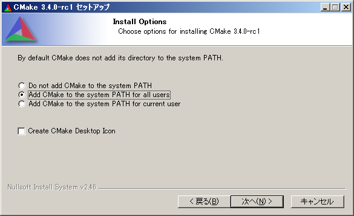

CMakeのインストールと使用方法 (全体の目次に戻る)
一般的にC/C++のプログラムを書く際は、複数のソースコードを分割して作成しておきます．
このとき、分割されたソースコードを人間が一つ一つ指定してコンパイルするのは骨が折れますね．
CMakeの優れる点は、簡単な設定を行うだけで、それらを自動的に行う点です．
また、更新があったソースコードのみをコンパイルするため、コンパイル時間が大幅に短縮します．
Linux or Mac における作業
LinuxとMacの場合は環境構築が非常に簡単です．
例えば、Ubuntu OS でしたら以下を実行すれば環境構築は完了です．
OSXの場合もCMakeのインストーラを実行するだけです．
sudo apt-get install cmake
次にCMakeの使用方法を説明します．
下記の二つのファイルを同じディレクトリ上に保存してください．
CMakeLists.txt:
cmake_minimum_required(VERSION 2.8)
add_definitions("-std=c++11 -Wall -O3 -march=native")
add_executable(main test.cc)
test.cc:
#include <iostream>
int main(void) {
std::cout << "test" << std::endl;
return 0;
}
これらのファイルと同じディレクトリ上で以下が実行できれば作業終了です．
cmake . # build環境構築
make # build
./main # 実行
なお、cmakeの挙動がおかしい場合は「
CMakeCache.txt」というファイルを一度削除してから、もう一度 cmake を実行して下さい．
プログラムの実行結果がおかしい場合は「make clean」も実行してみてください．
Windowsにおける作業
- はじめに公式サイトのリンクからインストーラーをダウンロードします.
今回は「cmake-3.4.0-rc1-win32-x86.exe」をダウンロードしましたが、最新のexeファイルで結構です．
- インストール設定は基本的にはデフォルトのままで構いませんが、環境パスを設定する項目だけ以下のように変更してください．
- 次に、このページの上段に記載されている「CMakeLists.txt」と「test.cc」を同じフォルダ上に作成してください．
- 二つのファイルと同じディレクトリ上で以下が実行できれば作業完了です.
cmake -G "MinGW Makefiles". # build環境構築
mingw32-make # build
main.exe # 実行
なお、cmakeの挙動がおかしい場合は「
CMakeCache.txt」というファイルを一度削除してから、もう一度 cmake を実行して下さい．
プログラムの実行結果がおかしい場合は「mingw32-make clean」も実行してみてください．
Windowsワンポイントアドバイス
- 「Shiftキー」を押しながら「右クリック」することで「コマンドウィンドウをここで開く」機能が使用できます．
- 「Windowsキー」を押しながら「Rキー」を押すことでコマンドの実行ウィンドウが立ち上がります．
そこに「cmd」と打ち込めばコマンドプロンプトが立ち上がります．
- コマンドプロンプト上で「doskey make=mingw32-make」と打ち込めば、mingw32-make を make というコマンドで実行できます(aliasできます)．